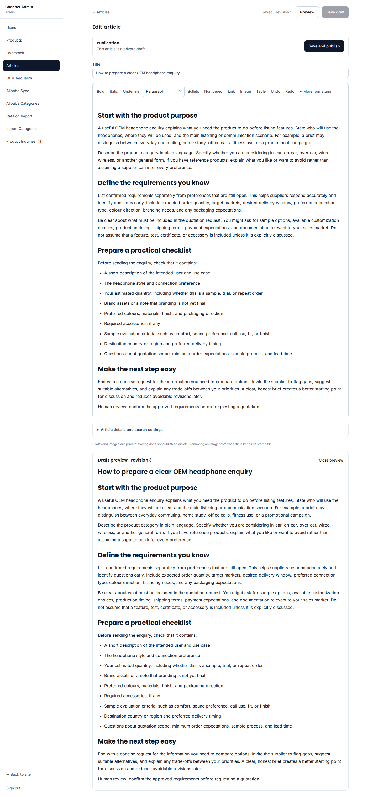
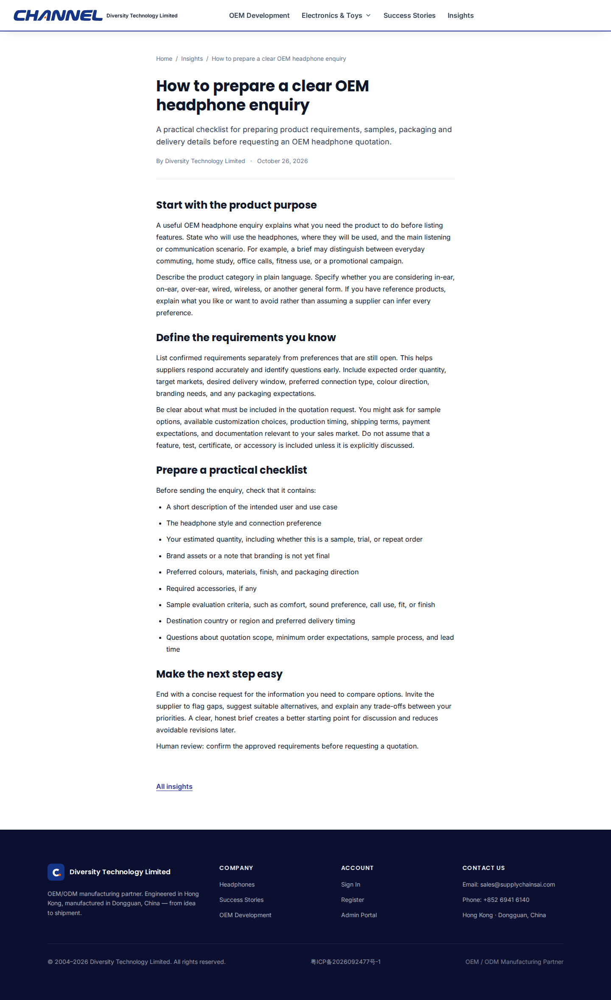

网站草稿接口已接通生产助手待安装 / 群测待执行从微信群里的一个想法，
到你能编辑、配图和预览的草稿
内容助手写文章，发布小助手把文字存进网站。你拿到后台链接后补图、预览，确认才公开。助手保存草稿不会直接上线，也不用等 GitHub 构建。
01操作人先配好工具
只给对应客户的发布助手增加草稿工具，保留其他功能；私有凭证不发群。
02你在群里发任务
发文章主题和配图想法，要求返回网站真实编辑链接，不能只在群里贴正文。
03你决定何时公开
登录后台看正文，上传图片、填写 alt、预览，再点击发布。
一张图看完整过程
这是本次生产接线要验收的流程。网站侧已经跑通，真实群里的助手配置和转交还需完成。
单独打开流程图
复制这段，在配置完成后发到群里
测试主题：海外采购如何准备一份清楚的 OEM 耳机询价。包含两张配图的创作想法，先存文字草稿，图片由人补充。
帮我写一篇英文文章，给第一次向工厂采购耳机的海外客户看。讲清楚询价前要准备哪些信息，实用一些，不要太像广告。配两张简洁的图，风格清爽。完成后请交给发布小助手，存到我们的网站草稿里，把编辑链接给我，我审核后再上线。
完整测试任务与英文配图提示词
拿到链接后，应该看到这样的后台

这是此前真实网站验收的截图。保存后刷新仍保留正文，预览需要管理员登录；本次微信群任务尚未执行。当前接口不会自动导入群里的图片或图片链接。助手可以把图片文件和建议交给你；在后台上传、填写准确 alt 后，再检查预览。
人工发布后的桌面与手机效果

桌面截图来自已完成的发布验收；该测试文章后来已撤回，私有草稿保留。点击图片可看原图。Blog 当前仍禁止搜索收录；群测不会自动解除这个开关。
服务器到底需要配置什么
新版另带写作技能和草稿技能，技术规则由助手承担。先按安装阻塞处理说明确认实际发布主机，不把旧Compose默认地址当成现网地址。
| 配置 | 作用 |
|---|
| 一个独立 MCP 工具文件 | 已在 Node20.19 启动并发现两个工具，无须复制整个网站仓库。 |
| 私有凭证文件 | 只有草稿权限，文件0600；本轮固定一篇文章，11月9日20:43到期。 |
| 发布助手的一项配置 | 只新增 channelblog，保留原模型、群绑定和其他工具。 |
| 真实群 / 客户身份 | 先确认客户和助手对应关系；不能把一份凭证直接挂到多客户共用入口。 |
网站侧已登记新凭证，生产服务器还未安装。若你安排操作人配置，请按技术说明使用已生成的文件，不要重新生成一个同名密钥。
这次怎样算测试成功
群里拿到真实链接 → 登录可见私有草稿 → 补图、刷新和预览正常 → 人工发布后正文、图片、列表和 sitemap 一致。重复投递仍是原草稿，不能覆盖你已经手动修改的内容。
本指南不包含密钥。网站接口与本地 Hermes 的真实联测已经通过；生产 HermesInfra / 企业微信群仍需实际配置和群测，两个结果分开记录。